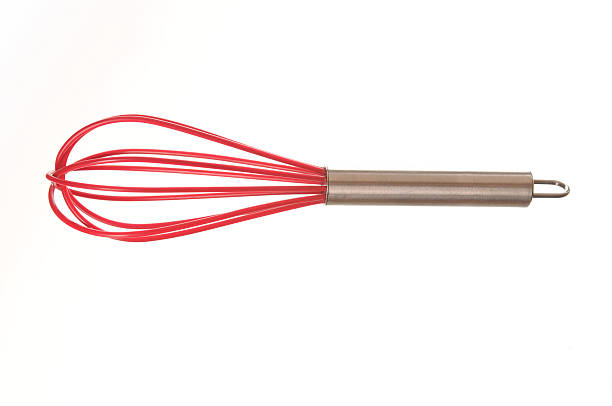
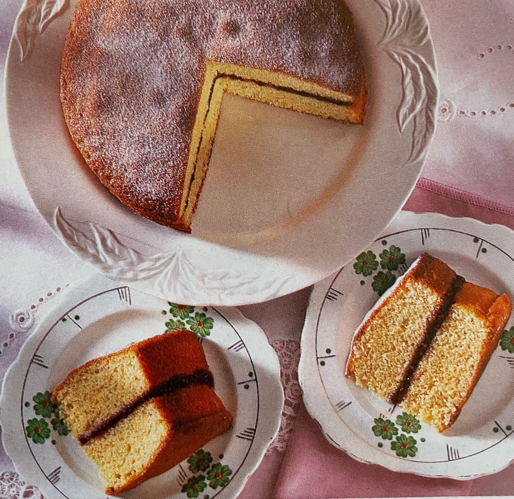

Baking Cakes by Andrew Hack
Home
Equipment
Recipes
Tips
Victoria Sandwich Cake Recipe

Ingredients List Serves 6-8 people
175g (6oz) Margarine
175g (6oz) Caster Sugar
3 x Medium Eggs
175g (6oz) Self-Raising Flour
1 and ½ tsp baking powder